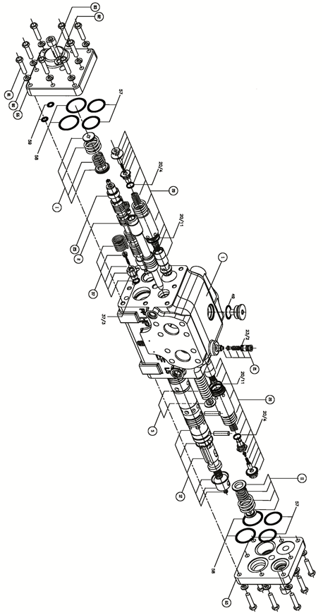

转向流量放大器 · STEERING FLOW AMPLIFIER VALVE
Рис. 1. Схема конструкции усилителя потока рулевого управленияОбщие сведения
Усилитель потока рулевого управления предназначен для увеличения потока гидравлического масла, поступающего систему рулевого управления, чтобы осуществлять управление гидроцилиндром поворотом и управляемыми колесами. Он устанавливается на раме впереди переднего моста с внутренней стороны левого колеса.
Управление
Управление системой осуществляется на основе принципа увеличения потока, в системе работа основного клапана управления или усилителя потока заключается в регулировании потока контролируемого или управляющего масла от блока клапанов управления поворотом или рулевого устройства, регулировка поступающего в гидроцилиндр поворота потока по существу осуществляется усилителем потока.
Действия при нахождении рулевого колеса в исходном состоянии (в нейтральном положении или в процессе прямолинейного движения или совершения поворота карьерного самосвала):
1. Масло от фильтр проходит через клапан последовательности для пропускания потока рабочей среды при достижении заданной величины давления, входящий в состав усилителя потока.
2. Клапан управления направлением находится в нейтральном положении, в этом режиме демпфирующий клапан, входящий в состав усилитель потока, играет роль в поглощении любых колебаний давления, возникающих в неблагоприятных дорожных условиях (например, имеется яма на дороге), которые не передаются в блок рулевого управления.
Действия при изменении расположения передних колес карьерного самосвала вслед за действием блока клапанов управления поворотом (путем поворота рулевого колеса):
1. Сигнал давления передается на клапан последовательности для пропускания потока рабочей среды при достижении заданной величины давления, входящий в состав усилителя потока.
2. Клапан последовательности для пропускания потока рабочей среды при достижении заданной величины давления играет роль в изменении направления потока масла, поступающего в блок рулевого управления.
3. После этого клапан управления направлением играет роль в изменении направления, это позволяет подавать требуемое количество рабочей жидкости к клапану регулирования давления/усилителю потока в сборе. Управление степенью перемещения золотникового клапана осуществляется с учетом уровня и скорости входного вала. Потом управляющий поток и основной поток рабочей жидкости сливаются в один поток, который подается к соответствующему отверстию гидроцилиндра поворота .
Клапан будет возвращаться в исходное состояние после прекращения вращения рулевого колеса.
Увеличение потока осуществляется с помощью клапана регулирования давления/усилителя. Когда давление в масляной полости повышается, может быть осуществлена регулировка потока до значения, пропорционального площади каждого отверстия золотникового клапана.
Клапан управления направлением контролирует перепуск масла. При превышении скорости (в этом случае поворот под действием колес совершается резче, чем способен управлять водитель), клапан управления направлением автоматически дросселирует поток перепускаемого масла для поддержания устойчивости работы гидроцилиндра поворота.
Давление на управляющем отверстии клапана регулирования давления/усилителя потока должно быть больше давления на основном управляющем отверстии, чтобы облегчить движение клапана. В данном положении системы может быть осуществлено управление возвратным усилием руля .
При нахождении в нейтральном состоянии или исходном состоянии демпфирующий клапан играет роль в защите гидроцилиндра поворота от собственных колебаний давления, слиянии гидравлического масла, подаваемого через всасывающий клапан, чтобы предотвращать кавитацию.
В некоторых карьерных самосвалах используется отдельный уравновешенный клапан для обеспечения нормальной непрерывной подачи масла к всасывающему клапану. В определенных карьерных самосвалах нормальное противодавление в системе играет данную роль.
Ремонт и регулировка
Периодический ремонт усилителя потока рулевого управления включает следующие виды работ:
1. Визуально проверить корпус клапана или шланги данной секции на наличие утечек.
2. Проверить степень чистоты и качество гидравлического масла.
3. Проводить испытания системы в соответствии с порядком, указанным в части 5 - «Гидравлическая система».
Снятие
Снятие усилителя потока производится в следующем порядке:
1. Остановить карьерный самосвал в безопасном месте, кроме использования фрикционной системы торможения, еще нужно надежно удерживать его в неподвижном состоянии другим подходящим методом.
2. Полностью сбросить давление в системе в соответствии с порядком, указанным в части 5 - «Гидравлическая система».
3. Снять все шланги, необходимо отметить их направление и расположение.
4. Закрывать или закупоривать все открытые отверстия или соединения, держать их как можно далеко от загрязняющих веществ.
5. Снять болты крепления усилителя потока рулевого управления к кронштейну.
6. Снять усилитель из кронштейна и разместить его в подходящее месте.
Разборка (см. рис. 1)
ВНИМАНИЕ: Отметить концевые пластины различными метками различными способами, чтобы обеспечить правильное определение их в процессе повторной установки. Необходимо отметить их направления. В процессе снятия отметить пружины по свойствам, чтобы обеспечить правильное определение их в процессе повторной установки. Отделить группы компонентов в подсборке друг от друга.
Разборка усилителя потока производится в следующем порядке:
ВНИМАНИЕ: Обеспечение чистоты очень важно при разборке компонентов рулевого управления. Если условия позволяют, то желательно выполнить операции в чистом месте. Перед разборкой следует полностью очистить наружную поверхность усилителя и участок ремонта. Удалить посторонние вещества и зазор с помощью проволочной щетки и чистого растворителя.
1. Надежно закрепить компонент в зажимном приспособлении или тисках. Поверхность зажимной головки должна покрываться защитным материалом, не допускается чрезмерное зажимание.
2. Снять болты и шайбы для крепления фланца усилителя. Снять фланец и штуцер шланга.
3. Снять другие штуцеры шланги.
4. Ослабить верхнюю центральную пробку, затем снять маленькую пружину, шарик, поршень и большую пружину, входящие в состав клапана регулирования давления в сборе. При снятии отметить расположение и направление каждой детали.
5. Ослабить другую верхнюю пробку. Ослабить клапан сброса давления в сборе (6), снять шайбу.
6. Сдвинуть торцевую крышку возле места соединения PP, ослабить и снять винты (13 и 15) и пружинные шайбы (12 и 14). Снять торцевую крышку (11).
7. Снять упорное кольцо пружины основного клапана управления направлением в сборе (8) и пружину.
8. Снять пружину.
9. Снять упорное кольцо и 6 О-образных колец (16, 17 и 20).
10. Снять кожух пружины.
11. Сдвинуть торцевую крышку возле места соединения LS, ослабить и снять винты (13 и 15) и пружинные шайбы (12 и 14).
12. Снять торцевую крышку (11).
13. Снять упорное кольцо и пружину.
14. Снять кожух пружины.
15. Снять торцевую крышку и 4 О-образных кольца (16 и 17).
16. Снять кожух пружины.
17. Снять приоритетный клапан в сборе (2) из блока клапанов (1).
18. Снять основной клапан управления направлением в сборе (7) из блока клапанов (1).
19. Снять усилитель потока в сборе (4) из блока клапанов (1).
20. Ослабить дроссельный клапан в месте соединения LS.
21. Извлечь обратный клапан (9) из корпуса клапана отверткой начиная с обоих концов.
22. Если приоритетный клапан в сборе (2) закреплен оправкой, то следует ослабить дроссельный клапан начиная с обоих концов золотникового клапана.
23. При фиксации разгрузочного клапана двухстороннего действия (5) осторожно снять пружинное кольцо небольшой отверткой начиная с проточкой (см. составные части компонента 5).
ВНИМАНИЕ: Следует защитить кожух пружины от повреждения.
24. Осторожно сдвинуть кожух пружины назад.
25. При фиксации пробки на конце золотникового клапан слегка выжать палец.
26. Снять пробку и пружину с внутренней стороны золотникового клапана.
27. Вставить оправку в отверстие под палец, ослабить обратный клапан.
ВНИМАНИЕ: Следует защитить поверхность золотникового клапана от повреждения.
28. Вставить оправку в отверстие под палец в пробке, ослабить дроссельный клапан.
Проверка и ремонт
Осмотр и ремонт разобранного усилителя потока производится в следующем порядке:
1. Тщательно очистить ряд деталей керосином с низким содержанием ароматических соединений.
2. Заменить все шайбы и уплотнительные кольца новыми.
3. Тщательно проверить все остальные детали на наличие следов износа или повреждений. Отремонтировать или заменить по мере необходимости.
Сборка
Сборка усилителя потока производится в следующем порядке:
1. Установить дроссельный клапан в пробку разгрузочного клапана двухстороннего действия (5). Затянуть его до достижения момента 45±10 дюйм-фунтов (5±1 Н.м).
2. Установить обратный клапан в золотниковый клапан. Затянуть его до достижения момента 175±25 дюйм-фунтов (20± Н.м). Не забудьте установить О-образное кольцо.
3. Установить усилитель потока в сборе (4) производится в следующем порядке:
ВНИМАНИЕ: Если существует необходимость разборки демпфирующего клапана усилителя потока, то следует обратиться в ОАО «NHL» для приобретения клапана с предварительной регулировкой.
a. Вставить коническую пружину в блок клапанов.
b. Установить регулировочный винт.
c. Установить золотниковый клапан.
d. Установить пружину.
e. Установить клапан с серводействием с О-образным кольцом. Затянуть его до достижения момента 175±45 дюйм-фунтов (20±5 Н.м).
f. Установить блок клапанов.
g. Установить пружину.
h. Установить диск.
i. Установить контргайку. Затянуть ее до достижения момента 135±20 дюйм-фунтов (15±2 Н.м).
j. Для получения более подробной информации о регулировании обратитесь в ОАО «NHL».
ПРЕДУПРЕЖДЕНИЕ: Не пытайтесь повторно устанавливать усилитель потока в сборе (4). Неправильная регулировка золотника в сборе (21) может привести к повреждениям деталей.
4. Установка обратного клапана (10) производится в следующем порядке:
a. Установить шарик.
b. Установить пружину и пробку. Затянуть их до достижения момента 45±10 дюйм-фунтов (5±1 Н.м).
5. Установка усилителя потока в сборе (4) производится в следующем порядке:
a. Установить проставку в пробку. Затянуть ее до достижения момента 45±10 дюйм-фунтов (5±1 Н.м).
b. Установить обратный клапан (см. шаг 3). Затянуть его до достижения момента 175±25 дюйм-фунтов (10±3 Н.м).
c. Установить внутренний золотниковый клапан на посадочное место.
d. Поставить внутренний золотниковый клапан на место.
e. Установить стопорное кольцо пальца.
f. Установить кожух пружины с шайбой на конец кольцевой канавки с отверстием под палец.
g. Установить пробку пружины и палец на другой конец.
h. Сдвинуть кожух пружины на посадочное место, держать его далеко от конца кольцевой канавки с отверстием под палец.
6. Установка приоритетного клапана производится в следующем порядке:
a. Установить дроссельный обратный клапан.
b. Затянуть каждый клапан до достижения момента 90±25 дюйм-фунтов (10±3 Н.м).
7. Установка приоритетного клапана (2) производится в следующем порядке:
a. Установить проставку.
b. Затянуть каждую проставку до достижения момента 45±10 дюйм-фунтов (5±1 Н.м).
8. Установить собранную пробку и пружину в блок клапанов и затянуть ее до достижения момента 220±25 дюйм-фунтов (25±3 Н.м). Не забудьте установить О-образное кольцо (18).
9. Установить приоритетный клапан (2) и основной клапан управления направлением в сборе (7).
ВНИМАНИЕ: Следует совместить управляющую пружину с местом соединения LS и определить правильное посадочное место.
10. Установить пружину на золотниковый клапан последовательности.
ВНИМАНИЕ: Следует установить пружину на конец блока клапанов возле места соединения LS.
11. Установить усилитель потока в сборе (4) в блок клапанов. Проставка должна находиться как можно ближе к месте соединения LS.
12. Сдвинуть к месту соединения PP- блока клапанов, установить смазываемую вазелином пружину на золотниковый клапан усилителя.
13. Установить направляющую пружины на конец смазываемого вазелином основного клапана управления направлением в сборе (7).
14. Установить смазываемые вазелином большую и маленькую пружины на конец основного клапана управления направлением в сборе (7).
15. Если требуется направляющий винт для облегчения процесса сборки, то установить его в блок клапанов.
16. Установить 4 больших О-образных кольца и 2 маленьких О-образных кольца на торцевую крышку (11).
17. Установить упор меньшего размера в смазываемый прорез концевой пластины, данный прорез предназначен для перекрытия направляющего золотникового клапана.
18. Зафиксировать перегородку и торцевую крышку (11) надлежащим образом.
19. Установить винт (15) с контр шайбой (12), затем установить остальные винты (13) и шайбы (12). Затянуть центральный винт до достижения момента 710±90 дюйм-фунтов (80±10 Н.м). Затянуть остальные винты до достижения момента 220±45 дюйм-фунтов (25±5 Н.м).
20. Сдвинуть к концу блока клапанов рядом с местом соединения LS. Если существует необходимость, установить ранее использованный направляющий винт.
21. Установить направляющую пружины на конец смазываемого вазелином направляющего золотникового клапана.
22. Установить смазываемые вазелином большую и маленькую пружины на конец основного клапана управления направлением в сборе (7).
23. Установить смазываемый вазелином относительно толстый упор усилителя потока в сборе (4) на концевую пластину.
24. Установить смазываемый вазелином относительно тонкий упор направляющего золотникового клапана на концевую пластину.
25. Установить 4 больших О-образных кольца в торцевую крышку (10), зафиксировать пластины и концевые пластины надлежащим образом.
26. Установить винт (15) с контр шайбой (12), затем установить остальные винты (13) и шайбы (12). Затянуть центральный винт до достижения момента 710±90 дюйм-фунтов (80±10 Н.м). Затянуть остальные винты до достижения момента 220±45 дюйм-фунтов (25±5 Н.м).
27. Установить фитинг шланга и фланец на клапан.
Общая сборка
Общая сборка собранного усилителя потока производится в следующем порядке:
ВНИМАНИЕ: Может быть, требуется установка ряда шлангов до установки клапана на кронштейн.
1. Зафиксировать клапан на кронштейне болтами и шайбами. Равномерно затянуть их заданным моментом во избежание повреждения элемента.
2. Установить шланги на посадочные места. Затянуть все шланги в соответствии с порядком, указанным в части 10 - «Дополнения».
3. Проводить испытания и регулировку компонентов и системы в соответствии с порядком, указанным в части 5 - «Гидравлическая система».
Система рулевого управления - усилитель потока рулевого управления
050-0130
4 SMC014 7-01
SMC014 7-01 1
Система рулевого управления - усилитель потока рулевого управления
050-0130
SMC014 7-01 1
Система рулевого управления - усилитель потока рулевого управления
050-0130
Система рулевого управления - усилитель потока рулевого управления
050-0130
SMC014 7-01 3
Система рулевого управления - усилитель потока рулевого управления
050-0130
2 SMC014 7-01
11
17
16
21
12
13
14
15
1
17
22
5
23
2
19
7
8
19
3
22
18
16
4
20
5
6
8
9
10
1. Блок клапанов
2. Приоритетный клапан
3. Пружина в сборе
4. Усилитель потока в сборе
5. Разгрузочный клапан двухстороннего действия в сборе
6. Клапан сброса давления в сборе
7. Основной клапан управления направлением в сборе
8. Пружина основного клапана управления направлением в сборе
9. Обратный клапан
10. Торцевая крышка
11. Торцевая крышка
12. Шайба
13. Винт
14. Шайба
15. Винт
16. О-образное кольцо
17. О-образное кольцо
18. О-образное кольцо
19. О-образное кольцо
20. О-образное кольцо
21. О-образное кольцо
22. О-образное кольцо
23. О-образное кольцо
24. О-образное кольцо
25. О-образное кольцо
Иллюстрации
